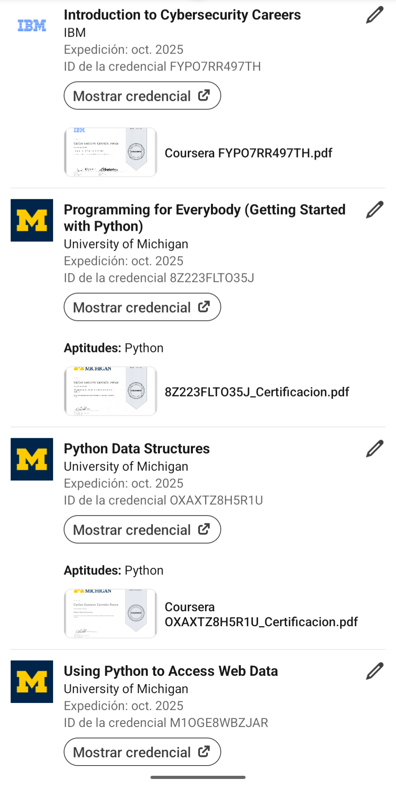

Uno de mis pasatiempos es:
Programar
Me gusta programar en diferentes lenguajes de programación, especialmente Python
Lenguajes de programación que me gustan
- Java
- Python
- JavaScript
Proyectos
- Algunos de mis proyectos
- Me gusta hacer proyectos de programación en diferentes lenguajes como Java, Python o JavaScript. Aunque tengo más expeciencia haciendo scripting con python y con PowerShell.
Probar nuevos lenguajes de programación
Me gusta mucho la programación, y siempre estoy buscando nuevos lenguajes de programación para aprender
Hacer certificaciones
Me gusta hacer certificaciones y prepararme un poco más. Ultimamente he hecho ciertas certificaciones en Coursera
Lenguaje favorito
A pesar de probar muchos tipos de lenguajes de programación, mi favorito es Python. Sin embargo, también me gustan muchos otros tipos de lenguajes de programación, como Java o JavaScript